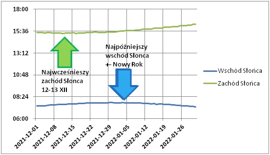
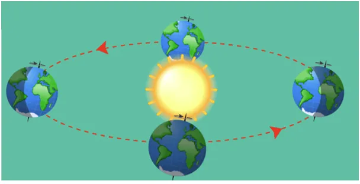

W tym roku do wiosny zaczynamy odliczać 12 dni wcześniej!
"Słońce rządzi światem" - mawiali starożytni i mieli dużo racji, przynajmniej w wymiarze egzystencjalnym.
Sezon grzewczy ustawia całą politykę na półkuli północnej a w naszej codzienności krótkie dni zmieniają nastroje i sposób życia. Czekamy na przesilenie zimowe (21 grudnia), aby zacząć odliczać do wiosny. Mam dla Was niespodziankę: wystarczy zajrzeć do tablic astronomicznych, aby ten ciemny czas skrócić o dwa tygodnie.

Ziemia pędzi wokół słońca po swej orbicie oraz wiruje wokół swej osi. Ruch wirowy jednak odbywa się wokół osi pochylonej w stosunku do płaszczyzny obiegu słońca. Wskutek tego co pół roku mamy bardziej oświetlony biegun północny lub południowy, są to zimy i lata. Gdy nasz biegun jest najbardziej ukryty w cieniu (oś odchylona najbardziej od słońca) mamy dzień przesilenia zimowego i zarazem najkrótszy dzień rok. Jednak wschody i zachody Słońca nie zmieniają się proporcjonalnie.

Z powodu ruchu wirowego i nachylenia już 13 grudnia będziemy mieli za sobą najwcześniejszy zachód Słońca. Poranki nadal będą coraz później, aż do nowego roku tak, aby w cyferkach wszystko się zgadzało i długość dnia była odpowiednia. Jednak dobry obserwator przy dobrej pogodzie zauważy, że wieczór wigilijny zapada już kilka minut później niż w dzień imienin Łucji czyli 13 grudnia.
Miało to istotny wpływ na wybór daty stanu wojennego, bo wtedy jesteśmy w najgorszej formie psychofizycznej. Każda władza wie o tym dobrze, więc nie dajmy się tym bardziej teraz atakować przygnębiającą propagandą, która się nasili w tym czasie. Filmy o przyrodzie słonecznej Afryki są doskonałą odskocznią, polecam !
Paweł Klimczewski